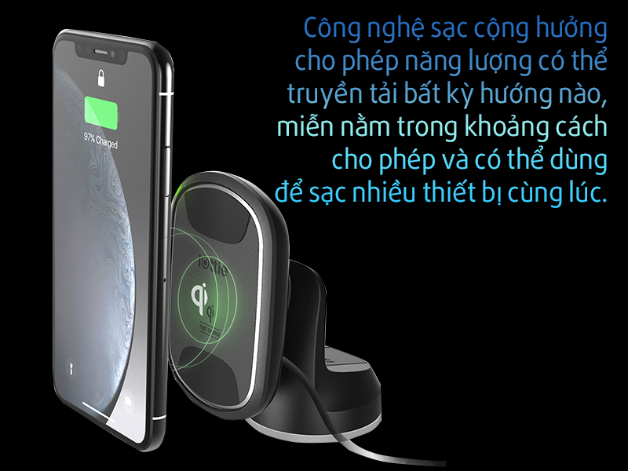

Hiện nay, đã có rất nhiều sản phẩm áp dụng công nghệ sạc không dây. Ví dụ như các mẫu smartphone đầu bảng của Samsung hay LG hỗ trợ cả chuẩn PMA và Qi, trong khi Apple lại cảm thấy chỉ cần tích hợp chuẩn Qi lên iPhone là đủ.
Bên cạnh đó cũng không ít những nhà sản xuất muốn đa dạng công nghệ trên thiết bị của họ bằng cách vừa tích hợp chuẩn sạc Qi kèm PMA, vừa áp dụng thêm phương thức sạc không dây cộng hưởng chung với sạc cảm ứng.
Lấy ví dụ như các sản phẩm của NuCurrent hiện hỗ trợ Qi, PMA và cả A4WP. Đồng thời, họ còn công bố ăng-ten sạc cộng hưởng và cảm ứng 10W đầu tiên trên thế giới. Audi và Mercedes cũng là một trong những nhà sản xuất xe hơi đi đầu trong việc tích hợp các công nghệ sạc không dây tiên tiến nhất trên ô tô của họ.
Song song đó, tổ chức WPC cũng đang mở rộng sạc không dây ở các công trình công cộng như quán cafe, nhà sách,... Nhờ vậy mà sau này, đi đến đâu, bạn cũng có thể dễ dàng sạc được smartphone của mình mà không bận tâm về vấn đề cáp sạc.
Theo tờ DigitalTrends: Sạc không dây lại là một công nghệ cực kì hữu ích, và hơn hết những tin đồn về tác hại của công nghệ sạc này là không chính xác. Vì vậy, bạn có thể tiếp tục sử dụng và trải nghiệm mà không lo pin của điện thoại bị hỏng.
Xem thêm: Tính năng sạc không dây có ảnh hưởng đến pin của điện thoại?
Sau một thời gian dài các nhà sản xuất "vật lộn" để tìm ra một quy chuẩn sạc không dây chung, cuối cùng vào năm 2017, việc Apple ra mắt bộ đôi iPhone 8 và iPhone X với khả năng hỗ trợ chuẩn sạc Qi đã phần nào ảnh hưởng đến hướng đi chung cho cả làng công nghệ.
Trước đó, thị trường khá là rối ren bởi có quá nhiều tiêu chuẩn liên quan đến sạc không dây. Đầu tiên có thể kể đến là chuẩn sạc Qi, một chuẩn sạc đến từ Wireless Power Consortium (WPC) hiện đang chiếm đến 90% thị phần.
Sau đó có thể kể đến chuẩn PMA (Power Matters Alliance, hay còn gọi là Powermat) và A4WP (Alliance for Wireless Power, tên gọi mới của chuẩn Rezence) .
Vào đầu năm 2018, các tổ chức đứng sau các chuẩn sạc này này đã sáp nhập, đặt dấu chấm hết cho sự phân mảnh tiêu chuẩn sạc không dây và gián tiếp xác nhận rằng: Qi là tiêu chuẩn chung, đang được các tổ chức và các hãng tập trung phát triển, cải tiến.
Tuy nhiên cũng cần lưu ý rằng, việc sáp nhập không có nghĩa là các sản phẩm đã ra mắt (với những chuẩn khác Qi) không thể tiếp tục sử dụng. Ví dụ như trường hợp của Powermat, họ đã tung ra các bản cập nhật để những trụ sạc không dây ở Starbucks nay có thể hoạt động với cả thiết bị hỗ trợ chuẩn Qi thay vì chỉ PMA như ngày trước.
Song song đó, chuẩn sạc cảm ứng không dây PMA AirFuel (là chuẩn do PMA kết hợp với A4WP tạo nên) vẫn được tiếp tục phát triển và được áp dụng trên một số sản phẩm của Powermat dù không thực sự phổ biến.
Nếu ở phần tên gọi, chúng ta có khá nhiều cái tên như Qi, PMA hay là A4WP, PMA AirFuel,... làm dễ bị rối thì khi nói đến nguyên lý hoạt động, chỉ có 2 nhóm chính: Đó là sạc không dây ứng dụng cảm ứng điện từ và sạc không dây dùng cộng hưởng điện.
Chẳng hạn như chuẩn sạc Qi, nó áp dụng nguyên lý của cảm ứng điện từ như sau: Sẽ có một cuộn dây sơ cấp đặt trong đế sạc và một cuộn dây thứ cấp đặt trong thiết bị (ví dụ như smartphone) và như vậy, 2 cuộn dây này tạo thành một máy biến áp điện.
Khi bạn cắm nguồn và bật đế sạc, nguồn điện xoay chiều đi vào sẽ tạo nên một trường điện từ xung quanh cuộn sơ cấp. Lúc này, nếu bạn đặt thiết bị có chứa cuộn dây thứ cấp đến đủ gần (khoảng 45 mm) thì dòng điện này sẽ được chuyển sang cuộn thứ cấp và biến đổi thành dòng một chiều bởi mạch thu trên smartphone, quá trình sạc sẽ bắt đầu diễn ra.
Trên thực tế, mặc dù ứng dụng cùng một phương thức như nhau nhưng chuẩn sạc Qi lại khác PMA ở tần số truyền và giao thức kết nối được sử dụng để giao tiếp với các thiết bị cũng như việc điều khiển quản lý năng lượng.
Bên cạnh công nghệ sạc không dây cảm ứng thì cũng có một vài tiêu chuẩn như AirFuel ứng dụng công nghệ sạc cộng hưởng. Về cơ bản, công nghệ này vẫn sử dụng các cuộn dây đặt trong thiết bị, tuy nhiên nó đã được điều chỉnh tần số dao động giữa thiết bị thu - phát nên giúp truyền tải năng lượng ở khoảng cách xa hơn, lên đến vài inch (1 inch = 2.54 cm).
Do các cảm biến máy ảnh không thể tự ghi màu, chúng yêu cầu các bộ lọc màu có kích thước pixel. Kết quả là, mỗi pixel chỉ ghi lại trong một màu, thường là màu đỏ, xanh lá cây hoặc xanh dương.
Vì vậy, một số smartphone, chẳng hạn như Huawei Mate 10 Pro và P20 Pro được trang cảm biến đơn sắc thứ hai ghi lại ảnh với đầy đủ ánh sáng. Khi đó, quá trình kết hợp hình ảnh từ camera đơn sắc với hình ảnh từ camera RGB chính sẽ tạo ra hình ảnh cuối cùng chi tiết hơn.
Việc bổ sung cảm biến đơn sắc có thể cải thiện hình ảnh trong bất kỳ điều kiện ánh sáng nào. Sự khác biệt còn rõ rệt hơn trong điều kiện ánh sáng yếu.
Khi một chiếc điện thoại sử dụng sự khác biệt về hình ảnh từ camera để tạo ra một bản đồ về khoảng cách đến vật thể trong một khung cảnh (thường được gọi là bản đồ độ sâu), bản đồ đó có thể được dùng để phát huy các ứng dụng AR.
Ví dụ: Ứng dụng dùng bản đồ độ sâu để đặt và hiển thị các vật thể trên các bề mặt trong cảnh. Nếu được thực hiện trong thời gian thực, các vật thể có thể di chuyển xung quanh và trở nên sống động, trông “thật” hơn. Hiện tại, đã có các nền tảng AR dành cho điện thoại nhiều camera như ARKit (Apple) và ARCore (Android).
Từ năm 2014, HTC đã trình làng chiếc One M8 có cảm biến độ sâu chuyên dụng. Theo thời gian, các cảm biến độ sâu chuyên dụng sử dụng Time of Flight (ToF) để tạo các bản đồ độ sâu tương đối chi tiết.
Xem thêm: Cảm biến camera Time-of-Flight (ToF) là gì? Nó được dùng để làm gì?
Giống như cách 2 mắt cung cấp cho chúng ta hình ảnh nổi (stereo) về những gì ở trước mặt và tạo mô hình 3D của cảnh, một điện thoại có 2 camera được căn chỉnh cũng có thể làm điều tương tự.
Nhà sản xuất máy ảnh – điện thoại có tên RED đã sử dụng camera stereo trên điện thoại Hydrogen One và phần mềm chuyên dụng để tạo chiều sâu cho hai hướng khác nhau của thiết bị cùng với hiệu ứng bokeh nhân tạo.
Công ty gọi công nghệ này là 4-View vì nó hỗ trợ 4 chế độ xem khác nhau theo mỗi hướng. Khi người dùng di chuyển đầu hoặc điện thoại, họ sẽ thấy các góc nhìn khác nhau. 4-View nếu hoạt động tốt sẽ mang lại trải nghiệm rất hấp dẫn mà không cần bạn đeo kính VR (thực tế ảo) hoặc AR đặc biệt để xem.

Không gian và chi phí không phải là hạn chế duy nhất trong việc tăng số lượng máy ảnh trên điện thoại thông minh. Sức mạnh xử lý cũng là một yếu tố cần lưu ý. Xử lý nhiều luồng hình ảnh phức tạp hơn nhiều so với xử lý ảnh chụp từ một camera.
Không chỉ tất cả các hình ảnh phải được xử lý như bình thường mà còn phải có thêm công đoạn căn chỉnh đúng cách, để hợp nhất chúng theo cách giảm thiểu các thành phần lạ trong các hình ảnh thu được.
Sau đó mới thực hiện hành động chuyên dụng cần thiết, chẳng hạn như tạo ra hiệu ứng bokeh hoặc ánh xạ tông màu cho trường hợp ánh sáng yếu nhằm tạo ra bức ảnh cuối cùng ưng ý.
Đó là lý do các flagship với hệ thống nhiều camera chất lượng luôn phải đi kèm với những vi xử lý mạnh mẽ nhất trên thị trường.

Các nhà sản xuất điện thoại có khá nhiều lựa chọn khi thiết kế camera một phần là nhờ sự hỗ trợ từ các nhà sản xuất mô-đun máy ảnh và các nhà cung cấp công nghệ.
Corephotonics và Arcsoft, Samsung Electro-Mechanicalics, Sunny Optical, O-Film, Foxconn Sharp, Q-Tech, LuxVutions,... luôn sẵn sàng cung cấp một loạt các giải pháp cho việc kết hợp nhiều máy ảnh vào một mô-đun duy nhất, cũng như các thư viện xử lý hình ảnh.
Do điện thoại thông minh (và thiết bị di động nói chung) vẫn sẽ có kích thước nhỏ và hình dạng mỏng, việc sử dụng các mô-đun nhỏ là cần thiết. Khi đó, các nhà sản xuất smartphone phải cạnh tranh bằng cách bổ sung các khả năng chụp ảnh và mở rộng sức mạnh camera bằng các công nghệ mới và hấp dẫn hơn.
Ví dụ cụ thể nhất là chiếc Huawei P30 Pro mới ra mắt có cụm 4 camera với cảm biến SuperSpectrum 40MP (hợp tác với Leica), ống kính tiềm vọng zoom quang 5X, cảm biến ToF 3D. được các chuyên gia đánh giá sẽ "định nghĩa lại khái niệm chụp ảnh bằng smartphone".